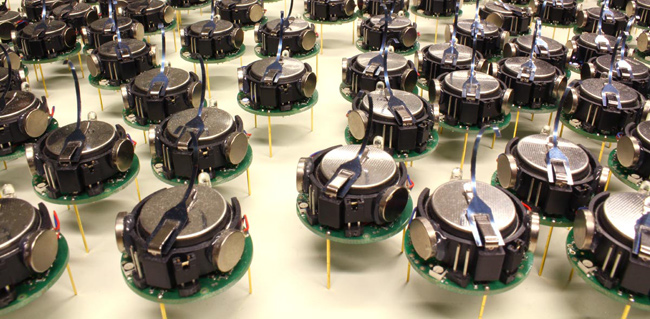
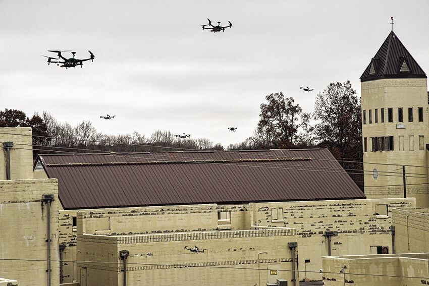

Missions: a Sense / Organize / Act taxonomy
A mission is a team-level objective of a multi-agent system whose agents act on local information and coordinate through peer and environment interactions, from which system-level progress and constraint satisfaction emerge. Missions group by their dominant deliverable into three functional families — Sense, Organize, Act. The cut is embodiment-agnostic: it applies across aerial and ground robot swarms, underwater vehicle teams, planetary surface rovers, autonomous satellite formations, and teams of reasoning agents — whether they couple mechanically, communicatively, or by observation alone.
Three families, grouped by deliverable
The taxonomy classifies the deliverable — what the team is fundamentally producing — not the platform, the sensors, or the coupling modality. Each family draws on its own established line of work.
(I) Information Gathering — Sense
Build and maintain a shared picture. The team's deliverable is shared knowledge of an environment, system, or set of targets; progress is team-level uncertainty reduction.
Canonical example — shared exploration: a team reduces uncertainty over an unknown region within a time budget; global progress depends on how local observations propagate through inter-agent interaction. The family rests on active perception and its later extensions to distributed and multi-robot sensing.

(II) Collective Organization — Organize
Form and hold structure & connectivity. The team's deliverable is its own relational state: a target configuration — communication topology, spatial geometry, value agreement, or spatial distribution — produced and sustained as conditions change.
Canonical examples: holding a relay backbone, maintaining a formation, reaching consensus on a value, covering an area. The family rests on graph-theoretic cooperative control, treating consensus, formation, and connectivity as properties of the interaction graph between agents.

(III) Action and Intervention — Act
Effect change on the world. The team's deliverable is an effect on the world or on a downstream system, produced through coordinated action and a division of work across agents — coupled by shared constraints: capacity, energy, conflicts in shared workspace or shared state, and safety.
Canonical example — precision agriculture: spraying or seeding allocated across a large area within strict resource and safety limits. The family comes out of multi-robot task allocation and the swarm-robotics demonstrations built on it.

Hardware anchors
Real program-scale deployments set the agenda. Four representative systems, shown as photographs, anchor the families to flown and fielded hardware.


The ternary simplex
Sense / Organize / Act are the three corners of a barycentric (ternary) simplex with coordinates (s, o, a), s + o + a = 1. A pure-corner mission lives at a vertex; real deployments rarely sit at a single corner. Most are composites — points in the interior of the simplex. We place a handful of widely-cited systems by their dominant deliverable; colour encodes the dominant family (blue Sense, green Organize, orange Act, purple composite).
Reading the interior: Kilobot sits close to the Organize corner for programmable self-assembly; SAGA sits close to the Act corner for allocated agricultural intervention; TERMES sits inboard of SAGA, with an additional Organize share carried by its stigmergic construction rules; DARPA SubT sits near the simplex centroid — a Sense-led mission that nonetheless demands a mesh-maintenance Organize layer and active mobility. Two composites sit firmly inside the simplex: NASA CADRE, just above Kilobot, where autonomous formation driving and a mesh among four lunar rovers (Organize) produce a cooperative subsurface radar map (Sense); and NASA Starling, near the Sense corner, which runs cooperative observation over formation maintenance and an in-space MANET together.
composites & strataNo fourth family — composites are interior points
Sense / Organize / Act are the three canonical families at the deliverable level. We deliberately do not introduce a fourth. Most deployments are composites — interior points of the simplex — and many can be read as special cases of one family inheriting structure from another:
- Cooperative manipulation is Act with a tight Organize substrate (a held formation around the load).
- Cooperative SLAM is Sense with an Organize substrate (a maintained communication graph that lets local maps fuse).
- Precision agriculture is Act with a Sense substrate (the spray map drives the actuation plan).
Properties such as adversarial robustness, fault tolerance, and real-time guarantees are likewise not separate families but strata across I–III: any of the three families can be required to deliver under attack, faults, or deadlines. The taxonomy classifies the deliverable; the deployment specifies which strata it must hold up under. We treat the three families as a scaffold rather than a fixed classification — missions that don't fit cleanly push the families to evolve, not the other way around.
scopeScope — the adversarial stratum
This is the bridge to the project's governing research question: how covert, within-bounds micro-level misbehaviour propagates to macro-level mission failure, and how resilient the mission is. The mission taxonomy supplies the substrate; the adversarial stratum is the cross-cutting layer our work operates in. See the Literature page for the gap analysis and the Theory page for the resiliency formalism.
one reconciled viewReconciling with the coupling taxonomy
An earlier draft (the Swarm-Resiliency work) organized missions by their coupling modality rather than their deliverable — what binds the agents together. The two cuts are not competitors: the deliverable a team produces and the coupling that produces it line up almost one-to-one. We present them here as one reconciled view: each deliverable family is delivered through a characteristic coupling, with a fourth coupling category (constraint-and-resource) attaching to the Act family's shared limits.
| Deliverable family (this taxonomy) | Coupling category (Swarm-Resiliency) | What binds the agents |
|---|---|---|
| Sense — build/maintain a shared picture | A · Information-coupled | Agents share observations; the deliverable is reduced joint uncertainty. |
| Organize — form/hold structure & connectivity | B · Topology-coupled | Agents are bound by the interaction graph / formation they must hold. |
| Sense (composite substrate) — fused estimate | C · Fusion-coupled | Local estimates are merged into a shared belief; one bad input corrupts the fusion. |
| Act — effect change on the world | D · Constraint-and-resource-coupled | Agents share capacity, energy, workspace, and safety limits while dividing work. |
References
- R. Bajcsy. Active Perception. Proceedings of the IEEE, 76(8):966–1005, 1988.
- B. J. Julian, M. Angermann, M. Schwager, D. Rus. Distributed Robotic Sensor Networks: An Information-Theoretic Approach. The International Journal of Robotics Research, 31(10):1134–1154, 2012.
- B. Charrow, V. Kumar, N. Michael. Approximate Representations for Multi-Robot Control Policies that Maximize Mutual Information. Robotics: Science and Systems (RSS), 2014.
- P. Schmuck, M. Chli. CCM-SLAM: Robust and Efficient Centralized Collaborative Monocular SLAM for Robotic Teams. Journal of Field Robotics, 36(4):763–781, 2019.
- DARPA. Subterranean (SubT) Challenge. darpa.mil, 2018. Accessed 2026.
- M. Mesbahi, M. Egerstedt. Graph Theoretic Methods in Multiagent Networks. Princeton University Press, 2010.
- M. M. Zavlanos, M. B. Egerstedt, G. J. Pappas. Graph-Theoretic Connectivity Control of Mobile Robot Networks. Proceedings of the IEEE, 99(9):1525–1540, 2011.
- R. Olfati-Saber, J. A. Fax, R. M. Murray. Consensus and Cooperation in Networked Multi-Agent Systems. Proceedings of the IEEE, 95(1):215–233, 2007.
- M. Rubenstein, A. Cornejo, R. Nagpal. Programmable Self-Assembly in a Thousand-Robot Swarm. Science, 345(6198):795–799, 2014.
- NASA JPL. CADRE — Cooperative Autonomous Distributed Robotic Exploration. jpl.nasa.gov, 2024. Accessed 2026.
- B. P. Gerkey, M. J. Matarić. A Formal Analysis and Taxonomy of Task Allocation in Multi-Robot Systems. The International Journal of Robotics Research, 23(9):939–954, 2004.
- J. Werfel, K. Petersen, R. Nagpal. Designing Collective Behavior in a Termite-Inspired Robot Construction Team. Science, 343(6172):754–758, 2014.
- E. Tuci, M. H. M. Alkilabi, O. Akanyeti. Cooperative Object Transport in Multi-Robot Systems: A Review of the State-of-the-Art. Frontiers in Robotics and AI, 5, 2018.
- Institute of Cognitive Sciences and Technologies, CNR. SAGA — Swarm Robotics for Agricultural Applications. laral.istc.cnr.it/saga, 2016. Accessed 2026.
- NASA. Starling Mission. nasa.gov, 2023. Accessed 2026.
- DARPA. OFFensive Swarm-Enabled Tactics (OFFSET). darpa.mil, 2017. Accessed 2026.